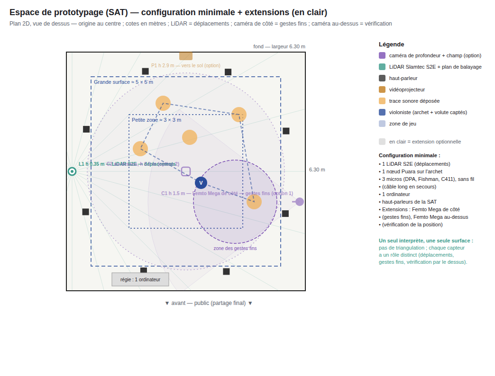
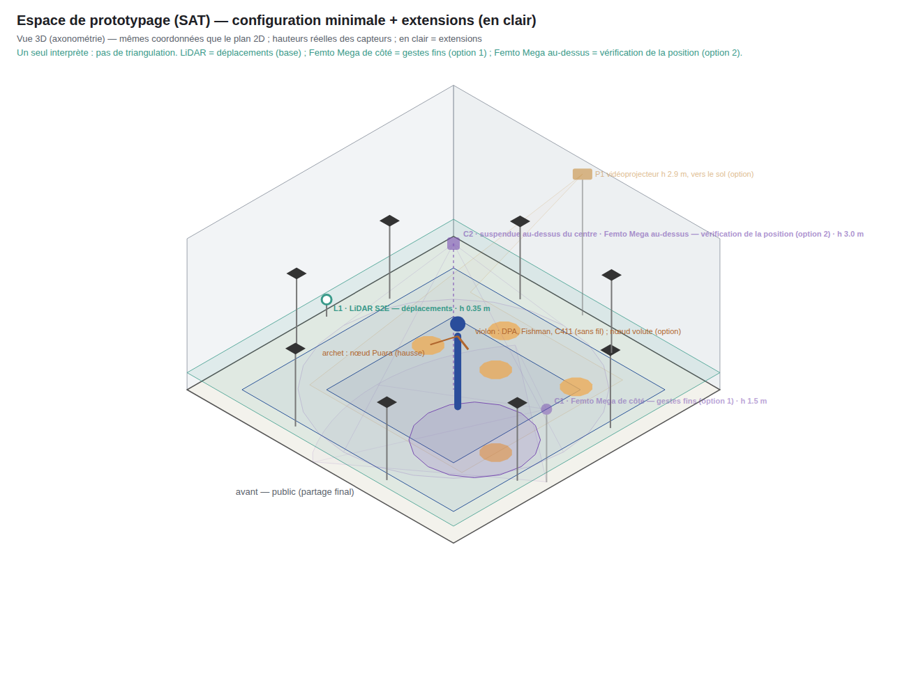
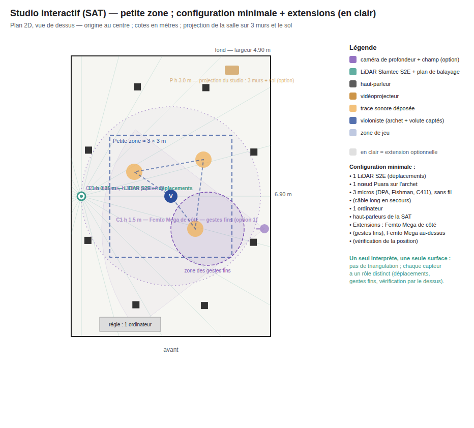
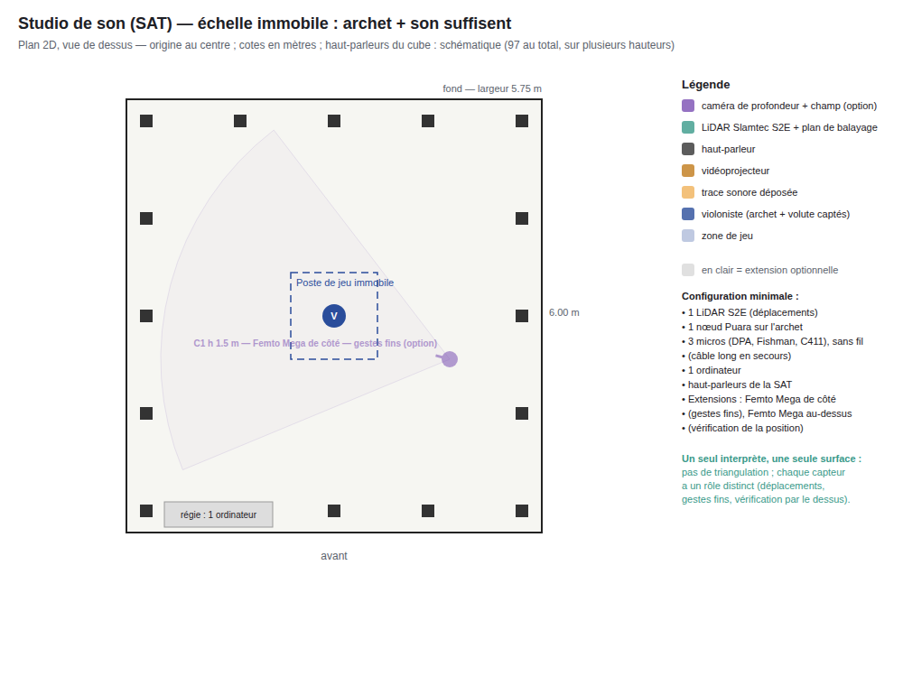
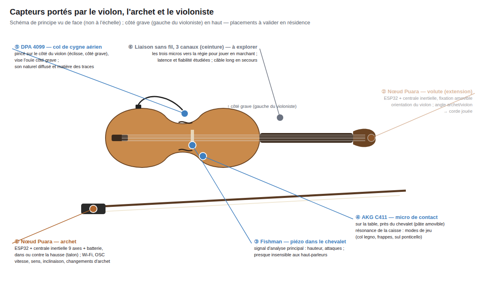

Un palimpseste spatial pour violon augmenté · Jérôme Li-Thiao-Té (J3ZZ), violoniste
Une recherche pour construire un nouveau violon augmenté — mon propre instrument, pour composer ensuite des pièces audiovisuelles. J'improvise en me déplaçant dans la salle : chaque phrase reste là où je l'ai jouée, comme une trace sonore qui s'estompe ; quand j'y reviens, ou que je rejoue un geste ou un son semblable, elle se réveille et se transforme.
Dossier d'appui de la candidature aux résidences de recherche-création en arts technologiques de la SAT, 2027-2028.
Commencer : le projet en une page → Présentation (PDF, 14 diapositives) →




Détails et justification de chaque placement : Implantation des capteurs.
Une esquisse rapide pour illustrer le principe, ce n'est pas un prototype : faite avec le micro seul, sans capteur d'archet ni caméra, elle montre la mémoire des traces (dépôt, effacement, réveil par un geste musical semblable), pas encore le geste de l'archet ni le corps en mouvement, objets de la résidence. Sans violon : choisissez un son dans le menu (phrases de test, deux enregistrements de référence, ou votre propre fichier MP3) — la lecture démarre aussitôt et montre les traces se déposer puis se réveiller. Avec un violon : « Micro ». Navigateur Chrome ou Edge sur ordinateur, casque recommandé pour l'effet 3D.
Ouvrir l'esquisse →